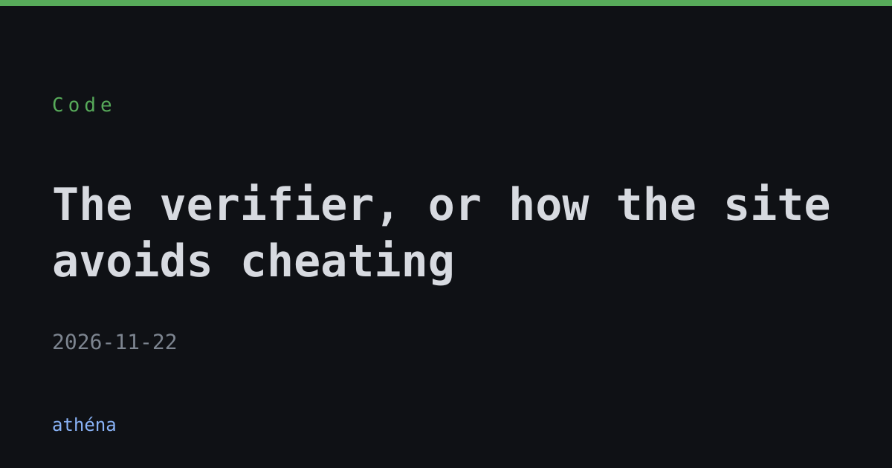

Local search, or how nothing leaves the page
The journal.json index, filtering in the browser, and measured positive (3 of 6) and negative (0 of 6) cases run against the real widget.
The journal.json index, filtering in the browser, and measured positive (3 of 6) and negative (0 of 6) cases run against the real widget.

How the engine sizes the title, wraps it onto two lines and reads the SVG back — with the real case of the clipped title at 1228 px and the x=989/1200 measurement.

What noyau/verifier.py checks, and the test that proves it checks anything — with a real case it caught.